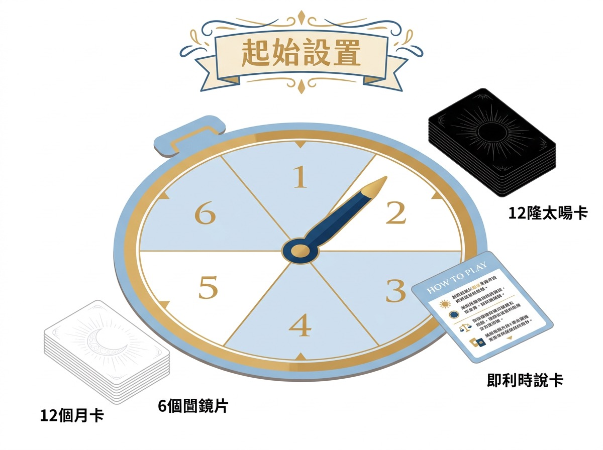
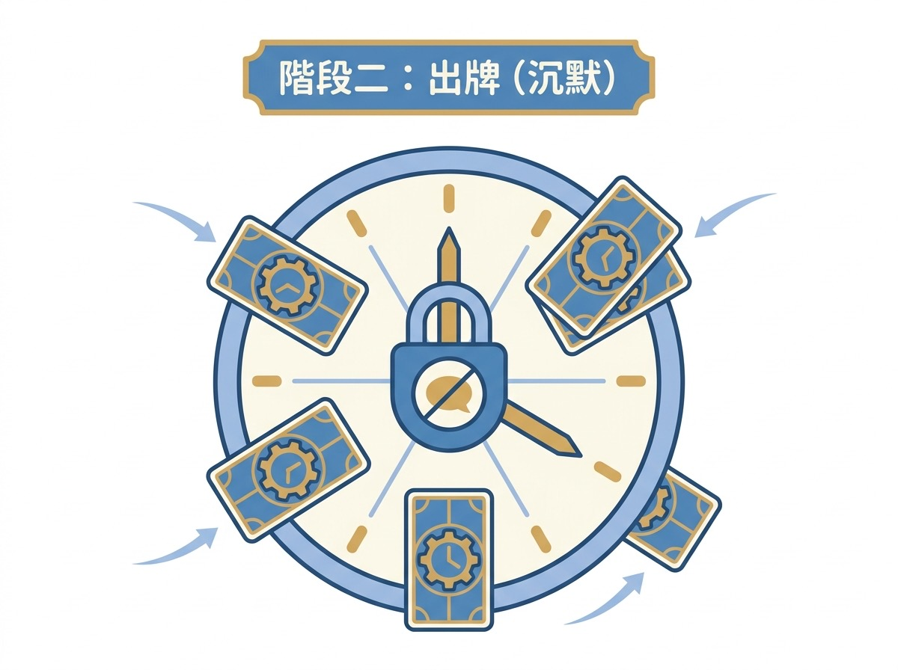
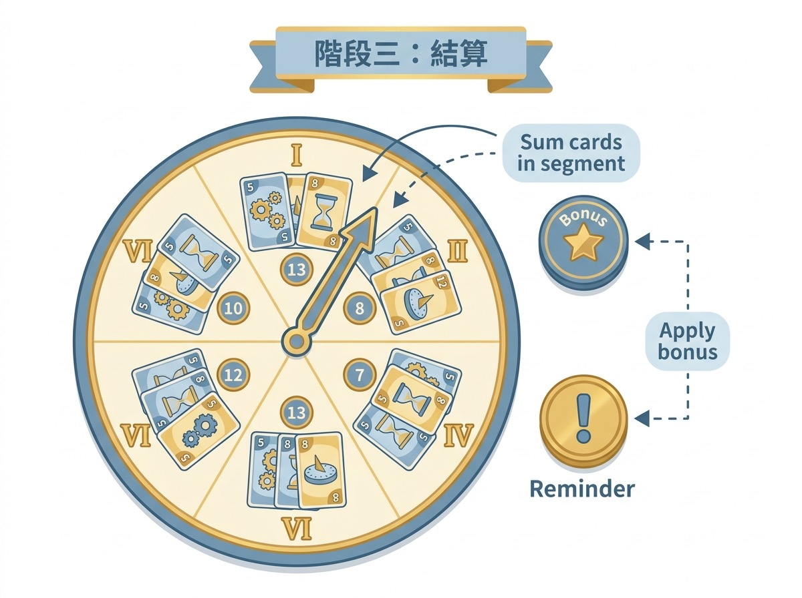

Take Time (掌握時刻) (Take Time) — 沉默出牌嘅合作默契
出版: Libellud (Dixit 同一間) · 類別: 家庭, 合作, 解謎

一句話總覽
合作解謎, 時鐘圖版, 共 40 關 10 章。限制討論後沉默出牌, 考驗默契。合作向, 輸咗都唔挫敗。
玩法 step 圖



Take Time (掌握時刻)
沉默出牌嘅合作默契
玩法簡介
Take Time 係 2023 年 Libellud (Dixit 嘅同一間出版社) 出嘅合作解謎遊戲, 設計師係 Wolfgang Warsch (大名鼎鼎嘅 The Mind / The Crew 設計師), 旺角多間店有英文版, 中文版偶爾出現。遊戲背景係時鐘圖版, 共 40 關 10 章, 玩家扮演時光旅人合作通過時空考驗。
Take Time 嘅核心機制係「限制討論後沉默出牌」: 玩家有一個討論階段可以傾計, 之後進入沉默出牌階段, 大家唔出聲, 同時間秘密出牌。呢個設計考驗玩家之間嘅默契, 唔係靠語言而係靠「共識」, 同一般合作遊戲 (如 Hanabi) 嘅 design philosophy 唔同。
呢個 game 適合 2-4 人, 最佳 2-3 人, 教學時間 15 分鐘, 一局 30-60 分鐘, 難度簡單至中等。旺角家庭 / 情侶向, 合作輸咗都唔挫敗, 非常友善。
完整流程 (Step by Step)
Step 1: 設置
揀 1 關 (Start 关) 開始。將時鐘圖版放喺中央, 上面有「時間格」(1-12 點, 圍繞時鐘面)。每個玩家攞一塊自己顏色嘅時光旅人板, 加 4 個時光 token (token 顏色對應玩家顏色)。每個玩家攞 5 張牌 (Start 关), 牌面係 0-12 嘅數字, 代表「時間」。
Step 2: 討論階段
每個玩家睇自己嘅手牌 (唔可以俾其他人睇), 然後大家自由討論: 「我覺得呢一關要出邊啲數字先?」討論時間冇限時, 但建議 5 分鐘內達成共識。重要: 唔可以直接講「我手上有一張 7」, 要用抽象語言表達, 例如「我有張大嘅」或者「我有兩張 0-3 嘅細數字」。
Step 3: 沉默出牌階段
討論完進入「沉默」階段, 大家唔出聲, 同時間秘密揀一張牌面朝下放喺自己時光旅人板上。呢個階段唔可以再傾計, 唔可以改變主意, 揀咗就鎖死。
Step 4: 揭曉 + 結算
所有人揭開自己嘅牌, 將牌放喺時鐘圖版對應時間格上 (即係牌寫 7 就放喺 7 點位置)。每關有「過關條件」, 通常係: (a) 特定數字放喺特定位置, (b) 全部玩家嘅牌由細到大排好, (c) 兩個相鄰數字差 1, 等等。如果達成條件, 過關, 攞 1 個 bonus token (之後解鎖特殊能力)。如果唔達到, 可以 skip 或者重試 (見 tiebreaker)。
Step 5: 攞關卡獎勵
過咗關, 每個玩家攞 1 個時光 token (時間格標記), 用喺下一關。Bonus token 可以喺下一關用 1 次「開牌」能力 (即揭開 1 個玩家嘅 1 張牌, 唔可以選擇性開, 要全開嗰隻手牌嘅 1 張)。
Step 6: 進入下一關
揀下一關 (通常順序, 但可以揀難度相近嘅關先解鎖)。每個玩家補牌到 5 張 (Start 关) 或 6 張 (後續關)。重複 Step 2-5。
Step 7: 特殊規則卡
每關有 1 張「特殊規則卡」, 喺過關條件之上加新限制, 例如: 「時間格必須逆時針排」或者「唔可以用兩個相同數字」。特殊規則卡令每關都有新變化, 40 關唔會悶。
Step 8: 章節解鎖
每 4 關為 1 章, 完成 1 章解鎖新嘅時光能力 (例如「將 1 張牌換成另一張」, 1 章用 1 次)。最終章 (Chapter 10) 係終極考驗, 通常要 30 分鐘討論同出牌。
戰術提示 (5+ 條)
- 「唔講具體數字」係鐵律: Notion 8/8 review 提到, Take Time 嘅 design 故意限制語言。如果有玩家話「我手上有一張 7」, 等於破壞默契嘅設計, 失去咗 Take Time 嘅精髓。教客時要 demo 一次「抽象語言」嘅表達: 用「大 / 中 / 細」、「奇 / 偶」、「連續 / 跳」等形容詞。高手表達方式係「我有 2 張細同 1 張大, 細嘅 1 張係 0」, 唔直接講 7, 但暗示咗「我有 1 張大」。
- 「善用開牌額度」: Bonus token 嘅「開牌」能力係 1 章用 1 次, 唔可以儲。每關開 1 張牌可以救命, 但要揀啱時機: 開「最大張嘅牌」冇用 (大家都知道大), 開「中間張嘅牌」先有用, 因為可以判斷「出牌範圍」。教客時要 demo: 開中間張可以知道同伴「有冇牌喺呢個範圍」, 從而決定自己出咩。
- 「留意特殊規則卡」: Notion 8/8 review 提到, 新手常見錯誤係「忘記特殊規則」。例如「時間格必須逆時針」, 玩家照常順時針出牌, 全部錯。教客時要喺 Step 4 結算前, 重新讀一次特殊規則卡, 確認過關條件。
- 「由細數字開始」: 一個簡單但有效嘅 strategy: 永遠由細數字出起, 因為細數字「0 / 1 / 2 / 3」比較「安全」, 錯咗都只係細錯, 唔會太影響後面。一個新手常犯嘅錯係「由大數字出起」, 因為佢哋覺得大數字「重要」, 但大數字出錯就全盤崩潰。教客時要教: 「由細出, 由大收」。
- 「默契 > 表達」: Take Time 嘅設計刻意限制語言, 係要玩家「諗對方會出咩」而唔係「叫對方出咩」。高手打法係「如果你覺得佢會出 5, 你就出 5」, 唔係「我覺得應該出 5」, 兩者好唔同。教客時可以 demo: 同一個牌局, 兩個玩家用唔同 strategy, 一個諗「我自己」, 一個諗「對方」, 結果諗對方嗰個贏。
- 「2 人場嘅特殊挑戰」: 2 人場冇得「隨波逐流」, 兩個玩家一定要達成共識。教客時要 demo: 2 人場嘅 abstract 表達要更模糊 (因為只有 2 個人, 表達太準確等於直接講數字), 反而 3-4 人場可以稍為清晰啲, 因為中間有「模糊空間」俾大家諗。
Tiebreaker
Take Time 嘅 tiebreaker 比較特別, 因為係合作遊戲:
- 主規則: 合作遊戲冇「贏 / 輸」嘅 tiebreaker, 過咗就過, 過唔到就 skip。但 skip 制度有特別設計。
- Skip 制 (Take Time 獨有): 如果一關過唔到, 玩家可以「skip」, 即係放棄呢關, 直接去下一關。Skip 會扣 1 個「悔過 token」(Remorse Token), 即係遊戲尾段嘅得分會扣減。
- 悔過 token 規則: 每 skip 1 關, 遊戲尾段結算時每個玩家扣 1 分。Take Time 嘅「失敗」唔係 game over, 係 skip 然後繼續。
- 最終章結算: 全部 40 關都玩完 (或者用晒悔過 token) 後, 數每個玩家嘅悔過 token 數目, 越少越好, 0 token 係滿分。
- 最終章失敗: 最終章 (Chapter 10) 如果過唔到, 唔可以 skip, 必須 retry。如果 retry 5 次都過唔到, 整個遊戲以「失敗結局」結束, 但仍然有分 (以悔過 token 計)。
來源: BGG comment 確認, 官方規則書 (Libellud 2023) page 8 寫「Skip and Remorse Token」段落。教客前可上 BGG: https://boardgamegeek.com/boardgame/369129/take-time
客戶推介
Take Time 喺旺角嘅定位係「合作解謎, 家庭情侶向, 輸咗都唔挫敗」。
- 新手 (✅): 規則簡單, 但合作默契要時間建立, 第一次玩會慢。
- 進階 (✅✅) + 專家 (✅✅): 默契深, 高手 2-3 個 abstract 表達就過到關, 新手要 10 個。
- 家庭 (✅✅): 跨代家庭最愛, 因為輸咗都唔挫敗, 老少咸宜。
- 朋友群 (✅): 4 人場最佳, 旺角 4 人合作 ok 但唔算最熱門。
- 情侶 (✅✅): 2-3 人場最浪漫, 默契建立嘅過程本身就係約會, 旺角情侶首選合作 game。
- 2 人 (✅): 2 人場可以但挑戰高, 教客時要 demo。
- 6+ 人 (❌): 4 人 max, 6+ 人場冇得玩。
旺角情侶 / 家庭 / 新手, 問「唔想互打, 想合作」, Take Time 係首選 (但要 4 人以下)。
客 query 對應
- 「我哋唔想互打, 想合作」: Take Time 合作向, 4 人以下首選。輸咗都唔挫敗, 旺角新客入門友善。
- 「情侶想玩, 有咩 game?」: Take Time 2 人場最浪漫, 默契建立嘅過程本身就係約會, 旺角情侶首選。
- 「家庭飯後想開, 老少咸宜」: Take Time 4 人 max, 跨代家庭最愛。輸咗都唔挫敗, 老人家都開心。
- 「30 min 內想完一局」: Take Time 一局 30-60 分鐘, 30 分鐘會超時。建議 60 分鐘預算, 玩晒 10-15 關。
- 「新手第一次玩, 揀咩好?」: Take Time 規則簡單, 但默契要時間。建議第一次玩 Skip 制容許, 唔好 retry 太耐。
特殊規則 / 變體
- 2 人規則: 標準規則, 挑戰高 (只有 2 個人, abstract 表達要模糊)。
- 3 人規則: 標準規則, 最佳人數之一。
- 4 人規則: 標準規則, 最多 4 人, 合作最容易。
- 5+ 人 (官方唔支援): 官方 4 人 max, 5+ 人場唔可以玩。
- House Rule — 開牌額度增加: 部分玩家會將 Bonus token 嘅「開牌」能力由 1 章 1 次改 2 章 1 次, 加快遊戲節奏, 但降低挑戰。
- House Rule — 討論時間限制: 標準規則冇限時, 部分玩家會加 5 分鐘討論時限, 加快節奏。
- 官方擴充 (待查): Take Time 而家未有官方擴充, 但 BGG 有 fan-made 關卡包, 進階客可以上 BGG 查。
- 簡化版 (Start 关難度): Start 关 (Chapter 1) 係教學用, 過咗 4 關先至開始有挑戰。新手可以重玩 Start 关 幾次熟練。
參考
- BGG: Take Time
- Notion 8/8 review 校稿: 2026-08-08
- 官方規則書: Libellud 2023 (Wolfgang Warsch 設計)
- 旺角供應: 多間店有英文版, 中文版偶爾出現
🛒 配合資源 (Cross-sell)
教客時可以一併推薦:
- DOSHA 木盒: @dosha.woodcraft 嘅木製收納盒, 配 Take Time (掌握時刻) 嘅 card 完美 fit。
- UNITARY STL: Cults3D 商店 有 3D 打印配件, 對應返多個 board game。
- 旺角新手桌遊: 旺角實體店, 教客 review 即場試玩。